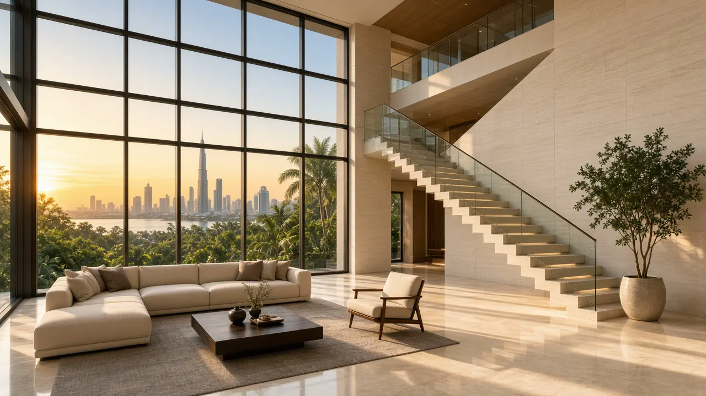
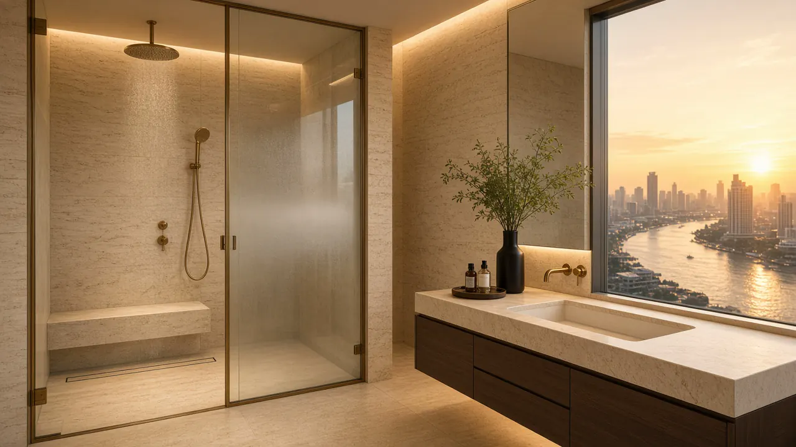
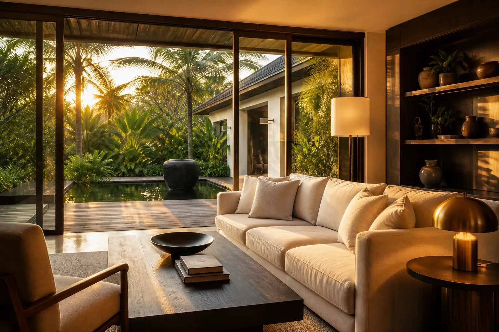
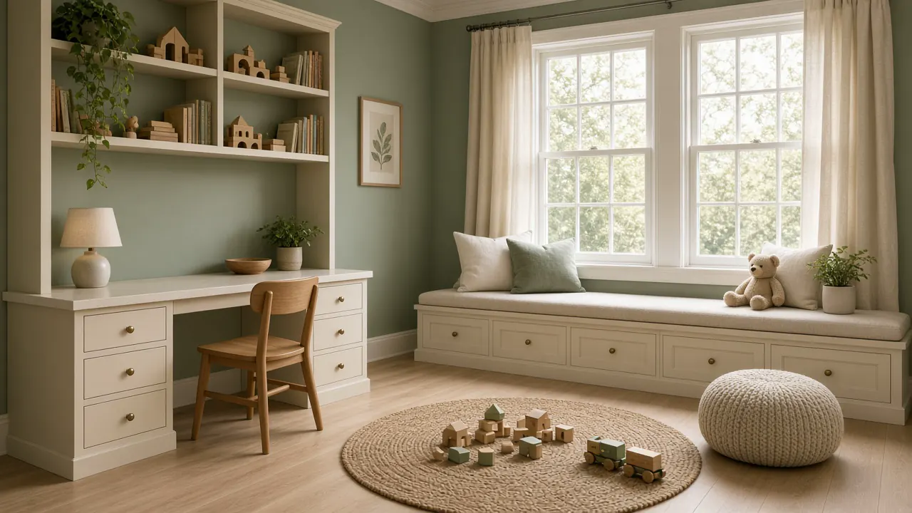
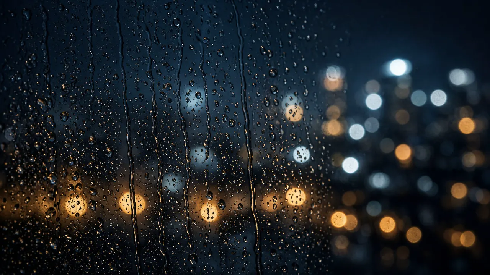
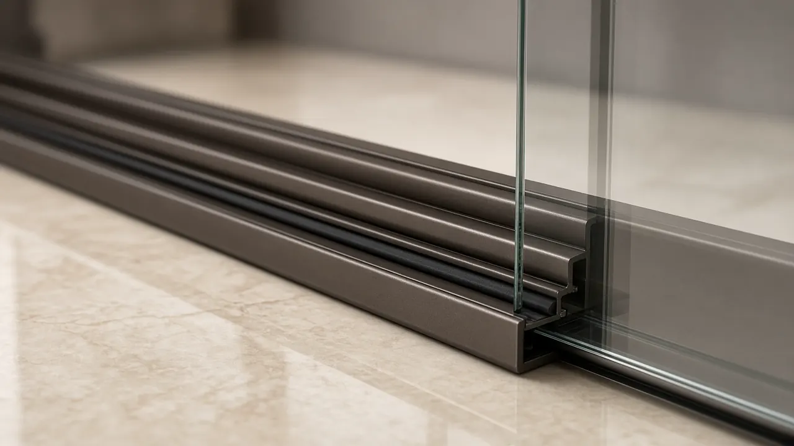
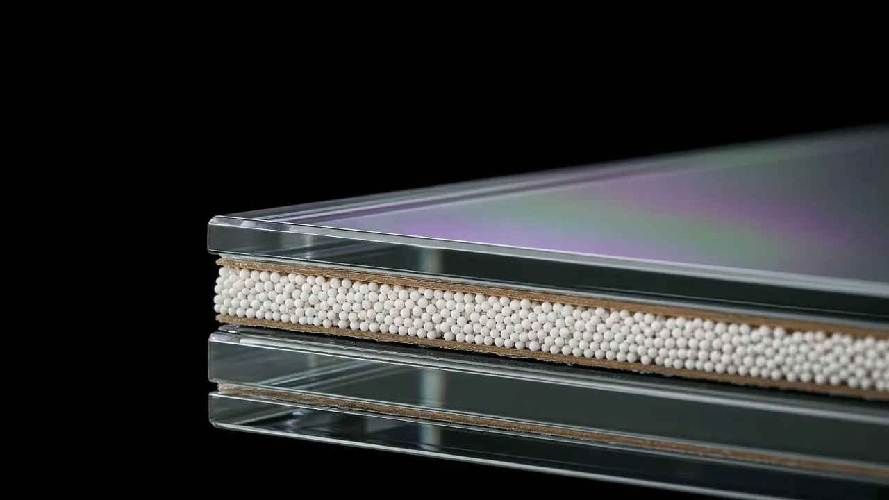
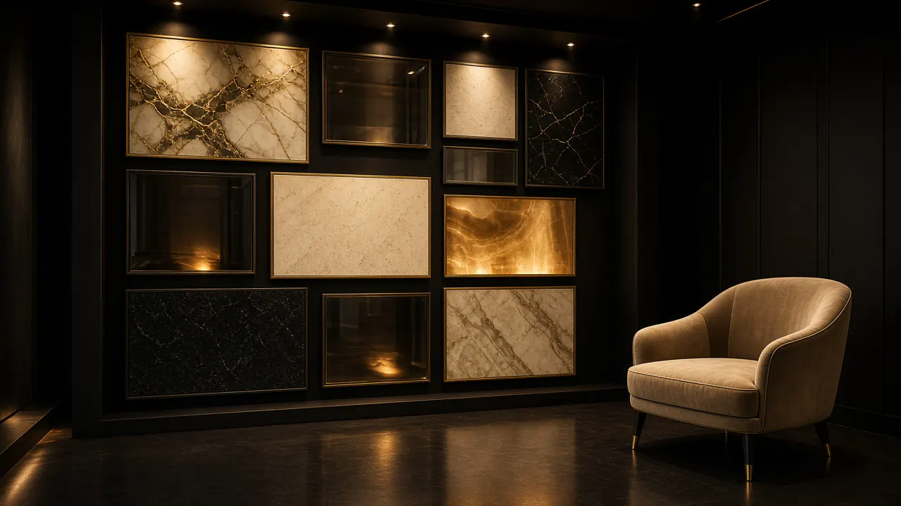
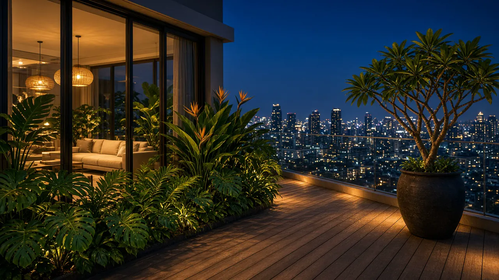

VOLUME ONE · STUDIES
A portfolio of quiet.
ภาพศึกษาเล่มหนึ่ง — บรรยากาศ ไม่ใช่เคสที่แล้วเสร็จ
These are atmospheric samples from Volume One: rooms we imagine, details we specify, places a home might open onto. They are studies — not finished jobs, not named clients, not proof of a completed install.
ภาพชุดนี้คือการศึกษาบรรยากาศของเล่มหนึ่ง ไม่ใช่งานที่ส่งมอบแล้ว
LIVING
Rooms that hold the day.
พื้นที่ใช้ชีวิต

Study
A kitchen that opens to the garden
ครัวที่เปิดสู่ลาน

Study
Dawn, held in glass
รุ่งอรุณผ่านกระจก

Study
Comfort, held
ความสบายที่เก็บไว้

Study
A slim facade, glowing
ซุ้มกระจกบ้านแคบ
QUIET ROOMS
Where the city stops.
ห้องที่เงียบได้

Study
A quiet room for small voices
ห้องเงียบสำหรับเสียงเบา

Study
Corner glazing, river light
มุมกระจก วิวแม่น้ำ

Study
Rain, and nothing else
ฝน และความเงียบ

Mood
Silence, as weather
ความเงียบในสายฝน
DETAILS
The work you do not see first.
รายละเอียดที่ทำงานเงียบ

Detail
The track does the quiet work
รางที่ทำงานอย่างเงียบ

Detail
Low-E, at the edge
ขอบกระจกโลว์อี

Craft
Hands before hardware
มือก่อนฮาร์ดแวร์

Anatomy
Eight layers, in section
แปดชั้น ในภาคตัด

Showroom
The wall you hear first
ผนังตัวอย่าง — ห้องทดสอบเสียง
PLACES
Where glass meets the weather.
สถานที่ที่กระจกเปิดออก

Study
Courtyard, pool, pavilion
ลาน น้ำสะท้อน ศาลา

Study
Blue hour on the terrace
ชั่วโมงน้ำเงินบนดาดฟ้า

Study
Glass over still water
กระจกเหนือน้ำนิ่ง

Study
Penthouse study — glare and river
เพนต์เฮาส์ — แสงสะท้อนแม่น้ำ
SCIENCE & TESTING
How a window is asked to prove itself.
วิทยาศาสตร์และการทดสอบ
Atmospheric studies of laboratory and factory settings used in the industry. They are not STELLA-accredited certificates. Read the standards and typical design targets on the Knowledge page.

Acoustics
A chamber that swallows echo
ห้องที่กลืนเสียงสะท้อน

Acoustics
The microphone at the specimen
ไมโครโฟนที่ชิ้นตัวอย่าง

Thermal
Where aluminum is interrupted
จุดที่อลูมิเนียมถูกตัดสะพานความร้อน

Glazing
The unit, still a climate
แผ่นกระจกฉนวน ยังเป็นภูมิอากาศเล็ก ๆ

Structure
Wind, applied with patience
แรงลมที่ถูกใส่ด้วยความอดทน

Weather
Water, asked to stay outside
น้ำที่ถูกขอให้อยู่ข้างนอก

Seals
Three gaskets, three jobs
ปะเก็นสามชั้น สามหน้าที่

Optics
Light along the edge
แสงเลียบขอบกระจก
INVITATION
Hear the rooms in person.
Photographs suggest. The sound chamber decides.
ภาพบอกบรรยากาศ — ห้องทดสอบเสียงบอกความจริง